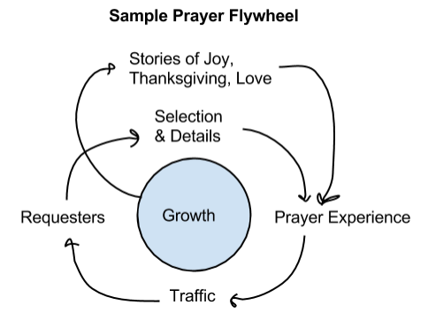

Frequently Asked Questions
Why does TheoTech need to exist?
Because opportunities to use technology to advance the gospel are so vast, it takes a company to deliver real and worthy results. A company is needed to align people’s interests and labor over the long term towards fulfilling Gospel-centered goals via invention.
What is TheoTech?
It is a company that practices Technology Entrepreneurship for the Gospel (TE4G). It aspires to be earth’s most God-centered company by beginning with God as its foremost customer and creating products and experiences that fulfill His desires and bless the world.
How does TheoTech fulfill its purpose?
See below to read about what TheoTech does.
We look for virtuous cycles where investments of time and energy produce momentum towards kingdom outcomes. This means that we have leverage--more value is produced than consumed. Here is a sample flywheel for increasing personal prayer.

What could happen if TheoTech succeeds and is it worth it?
If TheoTech succeeds, its Kingdom investors will have more capital to invest in Kingdom outcomes, its employees and collaborators will be well provided for and overjoyed at the opportunity to use their gifts to advance the Gospel, and its customers will be blessed with products that help them to love God and one another. The side-effect of these outcomes is many joyful foretastes of the Kingdom of God enjoyed to the ends of the earth.
What are some example “Kingdom outcomes”?
| End (Vision) |
Means (Mission) |
Product |
| Disciples being made of all nations |
Worldwide biblical literacy |
Project FIG |
| Foretastes of God’s kingdom experienced |
Thriving multilingual churches |
SPF.IO |
| Love abounding |
Personal prayer for everyone on earth |
Ceaseless |
| Believers developing & using their gifts to advance the Gospel |
Technology entrepreneurship for the Gospel |
TheoTech Community |
Why does a new for-profit entity to need to exist to pursue and deliver these outcomes?
-
Aligning Incentives: Every stakeholder’s reward is linked to the common good and the corporation’s success in accomplishing its Gospel-centered purpose.
-
Accountability to the people we serve: There is a direct connection between delivering value to people and a thriving business.
-
Being above reproach through transparency and honesty: There is no need to obscure a profit motive. Non-profits and for-profits alike need money to operate, but for-profits can be up-front about how they make money and how its business model benefits customers while achieving its mission.
-
Leadership & Talent development: The pressures a for-profit company faces naturally introduces rigor into its operations. When stewarded well, this rigor develops a higher level of leadership and effectiveness.
-
Justice & righteousness of rewards for taking responsibility: It is fitting for shrewd investors to get a good return, for hard workers to be rewarded for their labor, and for smart customers to continue to reap the benefits of their purchasing decisions. For profit companies that justly succeed enable shrewd investors to steward even more capital, hard workers to enjoy the fruits of their labor, and customers to continue getting more and more value.
-
Blessing the world through genuine commerce and value creation: A for profit company cannot justly survive unless it genuinely creates and delivers value, but if it does, we have a strong test of the blessing that it is.
What does TheoTech do?
-
Serving and activating a movement of technology entrepreneurship for the gospel.
-
Creating real products that serve real customers and empower them to advance God’s kingdom throughout the entire world in the fullness of its glory.
-
Providing technical consulting to kingdom-oriented companies to help them achieve the mission God has given them.
-
Providing technical program management services for the community breaking down work into deliverables so that mainstream professional technologists can contribute their spare time, skills and labor to build products that explicitly advance the gospel.
-
Helping organize Code for the Kingdom hackathons in Seattle.
-
Hosting Theology of Technology discussions
-
Hosting one-day Code for the Kingdom hack sessions
-
Hosting a monthly meet up for networking, mutual encouragement and assistance and mutual teaching.
-
Quality content teaching the theology of technology to help technologists and entrepreneurs think about their work with a Kingdom-oriented mindset
-
Quality content teaching technical skills to equip technologists and entrepreneurs to implement and execute on their Kingdom-oriented ideas.
-
A community of practice that helps and teaches one another.
-
A network fostering connections between people so that ideas can have the backing of a team of people to make them real.
-
Fostering in-person communities in technology companies so that entrepreneurs and technologists are able to pastor and support one another and think critically about how the work they do advances God’s kingdom and how they can imbue their work and workplace with the values of God’s kingdom.
Other scattered thoughts:
-
God acts as investor, employee and customer. All things are from him (investor), through him (employee) and to him (customer). He is all in all. We imitate him in acting in each of these ways.
-
Economics is the study of how people love one another as they love themselves because it is the study of how value moves between people.
-
Technology is just an avenue of grace that the Holy Spirit can choose to use to transform people’s lives.